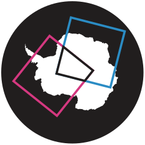

matchmakeo

Alpha - this project is in the early stages of development and should be considered unstable.
matchmakeo (match-make-EE-OH, [mæʧ meɪk ee əʊ]) is a python package to help with finding related earth observation data from two or more different sources. For example, if you wanted to find images from Sentinel-1 and MODIS of overlapping locations that were taken within 1 hour of each other.
Get started
Install matchmakeo
To install directly from GitHub with pip:
pip install git+ssh://git@github.com/bas-quasar/matchmakeo.git
Or from a locally cloned copy of the repo:
git clone git@github.com/bas-quasar/matchmakeo.git`
pip install -e ./matchmakeo
Database requirements
matchmakeo works using a geospatial database, this can either be a one-off local database or a remote database provided you can connect to it and have permissions to create tables. Databases can either be PostgreSQL with the PostGIS extension, or SQLite with the Libspatialite extension.
For a basic example and for most use cases, we recommend using docker to spin up a local container with a PostGIS image, this oneliner should do it:
docker run \
--name matchmakeo-db \
--volume ./data/db:/var/lib/postgresql/data \
-p 5432:5432 \
-e POSTGRES_DB=matchmakeo \
-e POSTGRES_PASSWORD=password \
-d --rm postgis/postgis
This will launch a postgis container named matchmakeo-db with a database named matchmakeo using the default username postgres, with data stored at local disk location ./data/db - run mkdir -p ./data/db if you don't already have this location.
Basic Usage
Download a set of footprint metadata to your database
For example, for MODIS:
from matchmakeo.queryset import NasaCMRQueryset, EarthEngineQueryset
from matchmakeo.product import Product
from matchmakeo.catalogues import NasaCMR, Field, EarthEngine
from matchmakeo.databases import PostGISDatabase
# instantiate the database object to define the database connection
database = PostGISDatabase(
username="postgres",
password="password",
database="matchmakeo",
host="localhost",
port=5432,
)
# define the catalogue object, in this case for the NASA common metadata repository
catalogue = NasaCMR(
client_id="matchmakeo_user",
)
# define a queryset object containing the temporal and spatial bounds
queryset = NasaCMRQueryset(
start_date="2020-01-01",
end_date="2020-01-31",
page_size=200,
lat_max=-70,
lat_min=-90,
lon_max=180,
lon_min=-180,
)
# define the product from the data catalogue
product = Product(
name="MOD021KM", # product name to download
table="modis_aqua", # table name to insert these into in your database
)
# run the footprint download
catalogue.download_footprints(
product=product,
queryset=queryset,
database=database,
# dry_run=True
)